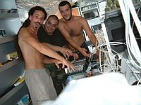

Jaromil's Musings

 printable page
printable page
printable page
printable page

Started in 1984 by Richard Stallman, with help by Eben Moglen, drafting the GNU General Public License, granting users the rights to:

Started in 2000 publishing low-consumption software creations for broadcasting and freedom of speech, granting users with the rights to:

The best result will come from everybody in the group doing what's best for himself, and the group. (John Nash, Nobel in 1994)
The dyne:bolic GNU/Linux liveCD multimedia operating system, developed from scratch since 2001 with the following focus:

No production or merchandising was ever planned for the distribution of this system, still as of today we count more than 1 million copies on printed CDs all around the world.
One of the few 100% free (libre, or in other words entirely freedom-respecting) GNU/Linux distributions that are recommended and mirrored by the Free Software Foundation worldwide, along with BLAG, gNewSense, Ututo, Musix and GNUstep.
The Independent UK lists us as Top 10 open source project in 2005, besides other projects as Wikipedia, Sourceforge, XVid, Gimp, Apache, Mediawiki, Firefox, OpenOffice:
....
Most of the world's computers use Microsoft Windows as the operating system. Despite its popularity, Windows does have drawbacks - cost and security holes, for starters. There is a free alternative: the geeky Linux/GNU. In the past it was known as reliable but hard to use. Dyne:bolic is a multimedia studio on a CD that you simply pop into any computer and start it up, instantly turning it into a Linux/GNU system without affecting existing things on your computer.
....
I looked at this distribution six months ago, but as impressive as it was then, it has gotten even better.
Take a look.
md
"Jaromil's contribution to the Free Software community is immense. We appreciate his work from India." - Frederick FN Noronha, BytesForAll. June 24, 2008*
We hope to survive and do more, we have no funding but lots of courage, contact us if you think you can help.

Jaromil's musings on http://jaromil.dyne.org
A thousand flowers will blossom!

|


|


|
 copyleft 2000 - 2009 dyne.org
foundation and respective authors. Verbatim copying
and distribution is permitted in any medium, provided
this notice is preserved.
Send inquiries & questions to dyne.org's hackers. copyleft 2000 - 2009 dyne.org
foundation and respective authors. Verbatim copying
and distribution is permitted in any medium, provided
this notice is preserved.
Send inquiries & questions to dyne.org's hackers.
|

|